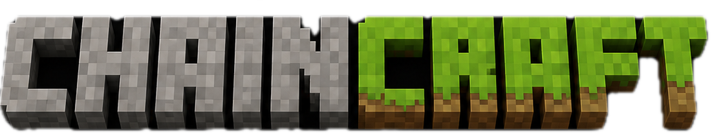

Open
Peers speak ctl.hello, gossip signed envelopes, and run
your validators in a linear pipeline. No central broker.

Open-source toolkit for gossip networks, consensus, and modular blockchains. You implement the object contract; the mesh handles transport, deduplication, and sync — in Python, Rust, and TypeScript.
Chaincraft separates protocol rules from network plumbing so you can prototype gossip networks, consensus, and modular blockchains. Version 1.0.0 is the same behaviour in three languages.
Peers speak ctl.hello, gossip signed envelopes, and run
your validators in a linear pipeline. No central broker.
id is SHA-256 of the canonical payload. Merkelized
objects expose digests so nodes can request missing history and
detect reorgs, including multi-block proof-of-work reorgs.
Ledgers, fee policy, mempool, and consensus are separate objects.
Swap balance for utxo, or proof-of-work
for proof-of-stake, without forking the mesh.
Three cores. One registry. Invalid messages are rejected the same way in every language.
| Level | Family | What you get |
|---|---|---|
| 0 | Wire | Canonical JSON, envelopes, TCP framing, ctl.hello, Schnorr, Ed25519 |
| 1 | Objects | receive for a prototype. is_valid to reject. Mementos only when a consensus object syncs |
| 2 | Consensus | pow, pos, pbft |
| 2 | Ledger | balance, utxo |
| 2 | Market | Mempool with RBF, fee ranking, burn split, base fee |
| 2 | Network | Peer book, NAT traversal, address URIs, loop channel |
Consensus in 1.0.0 (same decisions in all three languages):
from chaincraft_core import Envelope, encode_frame
env = Envelope.build("app.counter", {"by": "alice", "delta": 1})
frame = encode_frame(env.to_bytes())
print(env.id) # sha256 of the canonical payload
A mesh node listens, completes ctl.hello, deduplicates by
payload id, and applies your objects only after every object accepts
the message. Your protocol does not open sockets.
Reorgs: a proof-of-work tip change walks back to the
common ancestor. canonical is the parent chain. Orphan
blocks stay stored.
33 of 33 features. Python, Rust, and TypeScript accept and reject the
same inputs and emit the same bytes. The registry is
SPEC/features.yaml. CI fails when a language drifts.
| Core | Package | 1.0.0 |
|---|---|---|
| Python | chaincraft-core |
Reference. Vectors are generated from it. |
| Rust | chaincraft-core |
Same wire, same fork choice, same error classes. |
| TypeScript | @chaincraft/core |
32 features. Raw UDP is exempt: browsers have no UDP socket, and UDP is optional at Level 0. |
python3 tools/parity_check.py --summary
python3 conformance/run_all.py
python3 conformance/runner/run_interop.py
app.pubsub is a gossip object, not a consensus protocol.
A room is a topic. Join, leave, and speak are ordinary messages.
The handler is receive. The log is sorted by
seq, then by author. A node that never saw a post
simply does not have it.
{"app":"pubsub","op":"subscribe","room":"general","author":"alice"}
{"app":"pubsub","op":"publish","room":"general","author":"alice","text":"hello","seq":0}
{"app":"pubsub","op":"unsubscribe","room":"general","author":"alice"}
A second room is a second topic. Bob can speak in general
and still be rejected in trading until he subscribes.
Repeating ok uses a new seq. The same
seq is rejected. The contract is
SPEC/features/app-pubsub.md.
From a checkout to a gossiped message. The control channel is JSON lines on stdin. The same commands work in all three nodes.
Python 3.9+, a Rust toolchain, and Node 22.6+. Every command below starts from the clone root.
git clone https://github.com/jose-compu/chaincraft-monorepo.git
cd chaincraft-monorepo
python3 -m pip install -e "./python[dev]"
cargo build --bin node --manifest-path rust/Cargo.toml
npm install --prefix typescript
A prototype implements receive. The node wraps the
payload, hashes it, and relays it. It does not interpret your
application type, and peers may miss a message.
Override is_valid only to reject, and
add_message only for a consensus protocol.
Each process prints ready with the address it bound.
Point the second node at the first.
# Terminal 1
python3 -m chaincraft_core.node
# Terminal 2
cargo run --bin node --manifest-path rust/Cargo.toml
# Terminal 3
npm run node --prefix typescript
Read addr from terminal 1. On terminal 2 and terminal 3, send:
{"cmd":"connect","addr":"127.0.0.1:PORT"}
Commands: connect, send, ids,
quit. Stdout events:
ready (addr, impl),
hello (peer, addr),
connected,
sent (id),
received (id, type),
ids,
error.
quit stops the process.
Type this on the node that should originate the message. Peers
that already completed ctl.hello receive the same
payload id.
{"cmd":"send","type":"app.hello","data":{"message":"Hello, Chaincraft!"}}Same content, same canonical JSON, same id. Deduplication stops the relay from looping.
These three programs do not open a socket. Each one accepts the message, prints it, and frames an envelope. They print the same payload id.
Save as hello.py and run python3 hello.py.
from chaincraft_core import Envelope, encode_frame
from chaincraft_core.object import SharedObject
class HelloObject(SharedObject):
def receive(self, message):
print("Received:", message["message"])
data = {"message": "Hello, Chaincraft!"}
HelloObject().receive(data)
env = Envelope.build("app.hello", data)
frame = encode_frame(env.to_bytes())
print(env.id)
print("frame_len", len(frame))
Save the manifest as hello/Cargo.toml and the program
as hello/src/main.rs, then
cargo run --manifest-path hello/Cargo.toml.
Implement Protocol and receive.
Envelope::build takes the timestamp as a third argument;
None uses the clock. The digest does not.
[package]
name = "hello"
version = "0.1.0"
edition = "2021"
[dependencies]
chaincraft-core = { path = "../rust" }use chaincraft_core::{encode_frame, parse_json, Envelope, JsonValue, Protocol};
struct HelloObject;
impl Protocol for HelloObject {
fn receive(&mut self, message: &JsonValue) {
let text = message
.as_object()
.and_then(|obj| obj.get("message"))
.and_then(|value| value.as_str())
.unwrap_or("");
println!("Received: {text}");
}
}
fn main() {
let data = parse_json(r#"{"message":"Hello, Chaincraft!"}"#).unwrap();
HelloObject.receive(&data);
let env = Envelope::build("app.hello", data, None).unwrap();
let frame = encode_frame(&env.to_bytes().unwrap()).unwrap();
println!("{}", env.id);
println!("frame_len {}", frame.len());
}
Save as typescript/hello.ts and run
node hello.ts from typescript/.
Override receive.
import {
BaseSharedObject,
Envelope,
encodeFrame,
type JsonValue,
} from "./src/index.ts";
class HelloObject extends BaseSharedObject {
receive(message: JsonValue): void {
console.log("Received:", (message as { message: string }).message);
}
}
const data = { message: "Hello, Chaincraft!" };
new HelloObject().receive(data);
const env = Envelope.build("app.hello", data);
const frame = encodeFrame(env.toBytes());
console.log(env.id);
console.log("frame_len", frame.length);Attach a ledger or a consensus object and run the live 3×3 interop matrix. The wire rules are SPEC/wire-v1.md. The walkthrough in markdown is hello-world.md.
Three paths, depending on what you are building.
python -m chaincraft_core.node,
cargo run --bin node, or
npm run node. Speak JSON lines before you write a protocol.
Chat, a counter, a beacon: implement receive.
The message is applied on the node that has it. A disconnect
may leave a gap.
Proof-of-work or proof-of-stake, a balance or UTXO ledger, a mempool and a fee policy. The three languages must agree; the parity gate checks that.